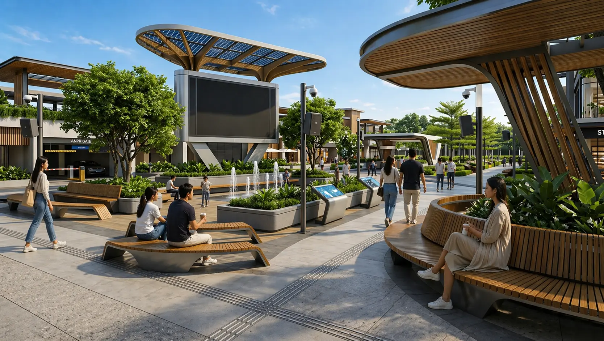

Informasi Sulit Terlihat di Area Ramai
Media promosi konvensional terkadang kurang menarik perhatian ketika ditempatkan di area yang ramai. Jarak pandang yang jauh dan banyaknya objek visual di sekitar dapat membuat informasi lebih sulit terlihat.